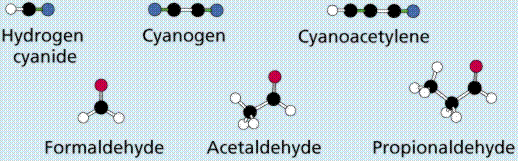
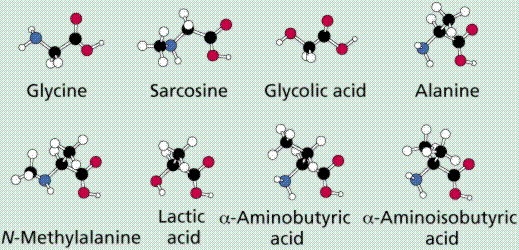
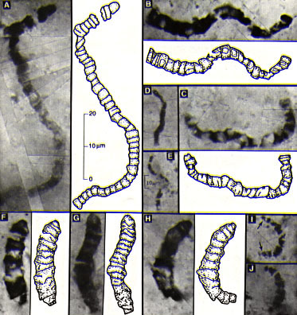
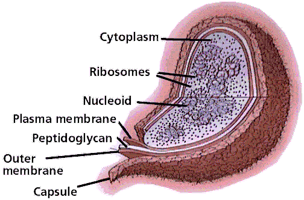
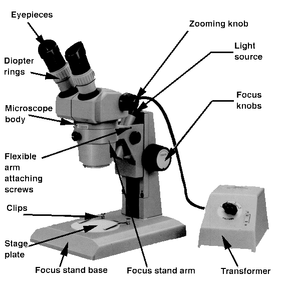
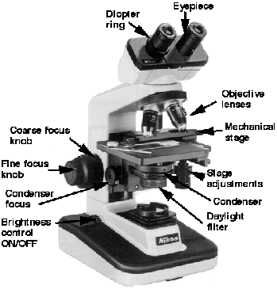

CELLS: ORIGINS
Table of
Contents
Components of Cells |
The Origins of Multicellularity |
Microscopes | Learning
Objectives | Terms
Review Questions |
Links | References
Origin of the Earth and
Life | Back
to Top
Scientific estimates place the origin of the
Universe at between 10 and 20 billion years ago. The theory currently
with the most acceptance is the Big
Bang Theory, the idea that all matter in
the Universe existed in a cosmic egg (smaller than the size of a
modern hydrogen atom) that exploded, forming the Universe. Recent
discoveries from the Space Telescope and other devices suggest this
theory smay need some modification. Evidence for the Big Bang
includes:
1) The Red Shift: when
stars/galaxies are moving away from us the energy they emit is
shifted to the red side of the visible-light spectrum. Those
moving towards us are shifted to the violet side. This shift is an
example of the Doppler effect. Similar effects are observed when
listening to a train whistle-- it will sound higher (shorter
wavelengths) approaching and lower (longer wavelengths) as it
moves away. Likewise red wavelengths are longer than violet ones.
Most galaxies appear to be moving away from ours.
2) Background radiation: two Bell Labs
scientists discovered that in interstellar space there is a slight
background radiation, thought to be the residual afterblast
remnant of the Big Bang. Click
here for additional information from sites dealing with the Big
Bang, or here
for a Powerpoint slideshow about the Big
Bang.
Soon after the Big Bang the major forces (such as
gravity, weak nuclear force, strong nuclear force, etc.)
differentiated. While in the cosmic egg, scientists think that matter
and energy as we understand them did not exist, but rather they
formed soon after the bang. After 10 million to 1 billion years the
universe became clumpy, with matter beginning to accumulate into
solar systems. One of those solar systems, ours, began to form
approximately 5 billion years ago, with a large "protostar" (that
became our sun) in the center. The planets were in orbits some
distance from the star, their increasing gravitational fields
sweeping stray debris into larger and larger planetesimals that
eventually formed planets.
The processes of radioactive
decay and heat generated by the impact of
planetesimals heated the Earth, which then began to differentiate
into a "cooled" outer cooled crust (of silicon, oxygen and other
relatively light elements) and increasingly hotter inner areas
(composed of the heavier and denser elements such as iron and
nickel). Impact (asteroid, comet, planetismals) and the beginnings of
volcanism released water vapor, carbon dioxide, methane, ammonia and
other gases into a developing atmosphere. Sometime "soon" after this,
life on Earth began.
Where did life originate and
how?
Extra-terrestrial: In 1969, a meteorite
(left-over bits from the origin of the solar system) landed near
Allende, Mexico. The Allende Meteorite (and others of its sort) have
been analyzed and found to contain amino
acids, the building blocks of
proteins,
one of the four organic molecule groups basic to all life. The idea
of panspermia hypothesized that life originated out in space and came
to Earth inside a meteorite. Recently, this idea has been revived as
Cosmic Ancestry. The amino acids recovered from meteorites are in a
group known as exotics: they do not occur in the chemical systems of
living things. The ET theory is now not considered by most scientists
to be correct, although the August 1996 discovery of the Martian
meteorite and its possible fossils have revived thought of life
elsewhere in the Solar System.
Supernatural: Since science is an attempt
to measure and study the natural world, this theory is outside
science (at least our current understanding of science). Science
classes deal with science, and this idea is in the category of
not-science.
Organic Chemical Evolution: Until the
mid-1800's scientists thought organic chemicals (those with a C-C
skeleton) could only form by the actions of living things. A French
scientist heated crystals of a mineral (a mineral is by definition
inorganic), and discovered that they formed urea (an organic
chemical) when they cooled. Russian scientist and academecian
A.I.
Oparin, in 1922, hypothesized that
cellular life was preceeded by a period of chemical evolution. These
chemicals, he argued, must have arisen spontaneously under conditions
exisitng billions of years ago (and quite unlike current
conditions).
|
Figure 1. Ingredients used in Miller's
experiments, simple molecules thought at the time to have
existed on the Earth billions of years
ago. Image
from Purves et al., Life: The Science of Biology, 4th
Edition, by Sinauer Associates (www.sinauer.com)
and WH Freeman (www.whfreeman.com),
used with permission.
|

|
In 1950, then-graduate student Stanley Miller
designed an experimental
test for Oparin's hypothesis. Oparin's
original hypothesis called for : 1) little or no free oxygen (oxygen
not bonded to other elements); and 2) C H O and N in abundance.
Studies of modern volcanic eruptions support inference of the
existence of such an atmosphere. Miller discharged an electric spark
into a mixture thought to resemble the primordial composition of the
atmosphere. Miller's atmosphere contents are shown in Figure 1. From
the water receptacle, designed to model an ancient ocean, Miller
recovered amino
acids. Subsequent modifications of the
atmosphere have produced representatives or precursors of all four
organic macromolecular classes. His experimental apparatus is shown
in Figure 2.
|
Figure 2. A diagrammatic representation
of Miller's experimental apparatus. Image from Purves et
al., Life: The Science of Biology, 4th Edition, by
Sinauer Associates (www.sinauer.com)
and WH Freeman (www.whfreeman.com),
used with permission.
|

|
The primordial Earth was a very different place
than today, with greater amounts of energy, stronger storms, etc. The
oceans were a "soup" of organic compounds that formed by inorganic
processes (although this soup would not taste umm ummm good).
Miller's (and subsequent) experiments have not proven life
originated in this way, only that conditions thought to have existed
over 3 billion years ago were such that the spontaneous (inorganic)
formation of organic macromolecules
could have taken place. The simple inorganic molecules that Miller
placed into his apparatus, produced a variety of complex molecules,
shown below in Figure 3.
|
Figure 3. Molecules recovered from
Miller's and similar experiments.
Images from Purves et al., Life: The
Science of Biology, 4th Edition, by Sinauer Associates
(www.sinauer.com)
and WH Freeman (www.whfreeman.com),
used with permission.
|
|

|
|

|

|
The interactions of these molecules would have
increased as their concentrations increased. Reactions would have led
to the building of larger, more complex molecules. A pre-cellular
life would have began with the formation of nucleic
acids. Chemicals made by these nucleic
acids would have remained in proximity to the nucleic acids.
Eventually the pre-cells would have been enclosed in a lipid-protein
membrane, which would have resulted in the first cells.
Biochemically, living systems are separated from
other chemical systems by three things.
- The capacity for replication from one
generation to another. Most organisms today use DNA as the
hereditary material, although recent evidence (ribozymes)
suggests that RNA may have been the first nucleic acid system to
have formed. Nobel laureate Walter Gilbert refers to this as the
RNA world. Recent studies suggest a molecular
- The presence of enzymes and other complex
molecules essential to the processes needed by living systems.
Miller's experiment showed how these could possibly form.
- A membrane that separates the internal
chemicals from the external chemical environment. This also
delimits the cell from not-cell areas. The work of Sidney W. Fox
has produced proteinoid
spheres, which while not cells, suggest a possible route from
chemical to cellular life.
Fossil
evidence supports the origins of life on Earth earlier than 3.5
billion years ago. The North Pole microfossils from Australia,
illustrated in Figure 4, are complex enough that more primitive cells
must have existed earlier. From rocks of the Ishua Super Group in
Greenland come possibly the earliest cells, as much as 3.8 billion
years old. The oldest known rocks on Earth are 3.96 billion years old
and are from Arctic Canada. Thus, life appears to have begun soon
after the cooling of the Earth and formation of the atmosphere and
oceans.
|
Figure 4. Microfossils from the Apex
Chert, North Pole, Australia. These organisms are Archean in
age, approximately 3.465 billion years old, and resemble
filamentous cyanobacteria. Image from
http://www.astrobiology.ucla.edu/ESS116/L15/1515%20Apex%20Chert.jpg.
|
|

|
These ancient fossils occur in marine rocks, such
as limestones and sandstones, that formed in ancient oceans. The
organisms living today that are most similar to ancient life forms
are the archaebacteria.
This group is today restricted to marginal environments. Recent
discoveries of bacteria at mid-ocean ridges add yet another possible
origin for life: at these mid-ocean ridges where heat and molten rock
rise to the Earth's surface.
Archaea and Eubacteria are similar in size and
shape. When we do recover "bacteria" as fossils those are the two
features we will usually see: size and shape. How can we distinguish
between the two groups: the use of molecular fossils that will point
to either (but not both) groups. Such a chemical fossil has been
found and its presence in the Ishua rocks of Greenland (3.8 billion
years old) suggests that the archeans were present at that time.
Is there life on Mars,
Venus, anywhere else?? | Back to
Top
The proximity of the Earth to the sun, the make-up
of the Earth's crust (silicate mixtures, presence of water, etc.) and
the size of the Earth suggest we may be unique in our own solar
system, at least. Mars is smaller, farther from the sun, has a lower
gravitational field (which would keep the atmosphere from escaping
into space) and does show evidence of running water sometime in its
past. If life did start on Mars, however, there appears to be no life
(as we know it) today. Venus, the second planet, is closer to the
sun, and appears similar to Earth in many respects. Carbon dioxide
build-up has resulted in a "greenhouse planet" with strong storms and
strongly acidic rain. Of all planets in the solar system, Venus is
most likely to have some form of carbon-based life. The outer planets
are as yet too poorly understood, although it seems unlikely that
Jupiter or Saturn harbor life as we know it. Like Goldilocks would
say "Venus is too hot, Mars is too cold, the Earth is just
right!"
Mars: In August 1996, evidence of life on Mars (or
at least the chemistry of life), was announced. Click
here to view that article and related
ones. The results of years of study are
inconclusive at best. The purported bacteria are much smaller than
any known bacteria on Earth, were not hollow, and most could possibly
have been mineral in origin. However, many scientists consider that
the chemistry of life appears to have been established on Mars.
Search for martian life (or its remains) continues.
Terms applied to cells | Back
to Top
Heterotroph
(other-feeder): an organism that obtains its energy from another
organism. Animals, fungi, bacteria, and mant protistans are
heterotrophs.
Autotroph
(self-feeder): an organism that makes its own food, it converts
energy from an inorganic source in one of two ways. Photosynthesis
is the conversion of sunlight energy into C-C covalent bonds of a
carbohydrate,
the process by which the vast majority of autotrophs obtain their
energy. Chemosynthesis
is the capture of energy released by certain inorganic chemical
reactions. This is common in certain groups of likely that
chemosynthesis predates photosynthesis. At mid-ocean ridges,
scientists have discovered black smokers, vents that release
chemicals into the water. These chemical reactions could have powered
early ecosystems prior to the development of an ozone layer that
would have permitted life to occupy the shallower parts of the ocean.
Evidence of the antiquity of photosynthesis includes: a) biochemical
precursors to photosynthesis chemicals have been synthesized in
experiments; and b) when placed in light, these chemicals undergo
chemical reactions similar to some that occur in primitive
photosynthetic bacteria.
Prokaryotes
are among the most primitive forms of life on Earth. Remember that
primitive does not necessarily equate to outdated and unworkable in
an evolutionary sense, since primitive bacteria seem little changed,
and thus may be viewed as well adapted, for over 3.5 Ga. Prokaryote
(pro=before, karyo=nucleus): these organisms lack membrane-bound
organelles,
as seen in Figures 5 and 6. Some internal membrane organization is
observable in a few prokaryotic autotrophs, such as the
photosynthetic membranes associated with the photosynthetic chemicals
in the photosynthetic bacterium Prochloron. (click
here to view Prochloron and other cyanobacteria at the Tree of
Life Page). A transmission electron
micrograph of Prochloron is shown in Figure 5.
|
Figure 6. The main
features of a generalized prokaryote
cell. Image
from Purves et al., Life: The Science of Biology, 4th
Edition, by Sinauer Associates (www.sinauer.com)
and WH Freeman (www.whfreeman.com),
used with permission.
|
|

|
The Cell
Theory is one of the foundations of modern
biology. Its major tenets are:
- All living things are composed of one or more
cells;
- The chemical reactions of living cells take
place within cells;
- All cells originate from pre-existing cells;
and
- Cells contain hereditary information, which is
passed from one generation to another.
Cell Membrane (also known as plasma
membrane or plasmalemma) is surrounds all cells. It: 1) separates the
inner parts of the cell from the outer environment; and 2) acts as a
selectively permeable barrier to allow certain chemicals, namely
water, to pass and others to not pass. In multicellular organisms
certain chemicals on the membrane surface act in the recognition of
self. Antigens
are substances located on the outside of cells, viruses
and in some cases other chemicals. Antibodies
are chemicals (Y-shaped) produced by an animal in response to a
specific antigen. This is the basis of immunity and
vaccination.
Hereditary material (both DNA and RNA) is
needed for a cell to be able to replicate and/or reproduce. Most
organisms use DNA. Viruses and viroids sometimes employ RNA as their
hereditary material. Retroviruses
include HIV (Human Immunodefficiency Virus, the causative agent of
AIDS) and Feline Leukemia Virus (the only retrovirus for which a
successful vaccine has been developed). Viroids
are naked pieces of RNA that lack cytoplasm, membranes, etc. They are
parasites of some plants and also as possible glimpses of the
functioning of pre-cellular life forms. Prokaryotic DNA is organized
as a circular chromosome
contained in an area known as a nucleoid.
Eukaryotic DNA is organized in linear structures, the eukaryotic
chromosomes, which are associations of DNA and histone
proteins contained within a double
membrane nuclear envelope, an area known as the cell nucleus.
Organelles are formed bodies within the
cytoplasm that perform certain functions. Some organelles are
surrounded by membranes, we call these membrane-bound
organelles.
Ribosomes
are the tiny structures where proteins synthesis occurs. They are not
membrane-bound and occur in all cells, although there are differences
between the size of subunits in eukaryotic and prokaryotic
ribosomes.
The Cell
Wall is a structure surrounding the
plasma membrane. Prokaryote and eukaryote (if they have one) cell
walls differ in their structure and chemical composition. Plant cells
have cellulose
in their cell walls, other organisims have different materials
cpmprising their walls. Animals are distinct as a group in their lack
of a cell wall.
Membrane-bound organelles occur only in eukaryotic
cells. They will be discussed in detail later. Eukaryotic cells are
generally larger than prokaryotic cells. Internal complexity is
usually greater in eukaryotes, with their compartmentalized
membrane-bound organelles, than in prokaryotes. Some prokaryotes,
such as Anabaena azollae, and Prochloron, have internal
membranes associated with photosynthetic pigments.
The Origins of Multicellularity | Back
to Top
The oldest accepted prokaryote fossils date to 3.5
billion years; Eukaryotic fossils to between 750 million years and
possibly as old as 1.2-1.5 billion years. Multicellular fossils,
purportedly of animals, have been recovered from 750Ma rocks in
various parts of the world. The first eukaryotes were undoubtedly
Protistans,
a group that is thought to have given rise to the other eukaryotic
kingdoms. Multicellularity allows specialization of function, for
example muscle
fibers are specialized for contraction,
neuron
cells for transmission of nerve messages.
Microscopes are important tools for studying
cellular structures. In this class we will use light microscopes for
our laboratory observations. Your text will also show light
photomicrographs (pictures taken with a light microscope) and
electron micrographs (pictures taken with an electron microscope).
There are many terms and concepts which will help you in maximizing
your study of microscopy.
There are many different
types of microscopes used in studying biology. These include the
light microscopes (dissecting, compound brightfield, and compound
phase-contrast), electron microscopes (transmission and scanning),
and atomic force microscope.
The microscope is an
important tool used by biologists to magnify small objects. There are
several concepts fundamental to microscopy.
Magnification
is the ratio of enlargement (or eduction) between the specimen and
its image (either printed photograph or the virtual image seen
through the eyepiece). To calculate magnification we multiply the
power of each lens through which the light from the specimen
passes, indicating that product as GGGX, where GGG is the product.
For example: if the light passes through two,lenses (an objective
lens and an ocular lens) we multiply the 10X ocular value by the
value of the objective lens (say it is 4X): 10 X 4=40, or 40X
magnification.
Resolution is the
ability to distinguish between two objects (or points). The closer
the two objects are, the easier it is to distinguish recognize the
distance between them. What microscopes do is to bring small
objects "closer" to the observer by increasing the magnification
of the sample. Since the sample is the same distance from the
viewer, a "virtual image" is formed as the light (or electron
beam) passes through the magnifying lenses. Objects such as a
human hair appear smooth (and feel smooth) when viewed with the
unaided or naked) eye. However, put a hair under a microscope and
it takes on a VERY different look!
Working distance
is the distance between the specimen and the magnifying
lens.
Depth of field is a measure
of the amount of a specimen that can be in focus.
Magnification and resolution are terms used
frequently in the study of cell biology, often without an accurate
definition of their meanings. Magnification is a ratio of the
enlargement (or reduction) of an image (drawing or photomicrograph),
usually expressed as X1, X1/2, X430, X1000, etc. Resolution is the
ability to distinguish between two points. Generally resolution
increases with magnification, although there does come a point of
diminishing returns where you increase magnification beyond added
resolution gain.
Scientists employ the metric system
to measure the size and volume of specimens. The basic unit of length
is the meter (slightly over 1 yard). Prefixes are added to the
"meter" to indicate multiple meters (kilometer) or fractional
meters (millimeter). Below are the values of some of the
prefixes used in the metric system.
kilo = one thousand of the basic
unit
meter = basic unit of
length
centi = one hundreth (1/100) of the
basic unit
milli = one thousandth (1/1000) of
the basic unit
micro = one millionth (1/1,000,000)
of the basic unit
nano = one billionth
(1/1,000,000,000) of the basic unit
The basic unit of length is the meter
(m), and of volume it is the liter (l). The gram (g). Prefixes listed
above can be applied to all of these basic units, abbreviated as km,
kg, ml, mg, nm....etc. The Greek letter micron (µ) is applied to
small measurements (thoud\sandths of a millimeter), producing the
micrometer (symbolized as µm).
Measurements in microscopy are usually expressed in the metric
system. General units you will encounter in your continuing biology
careers include micrometer (µm, 10-6m), nanometer
(nm, 10-9m), and angstrom (Å,
10-10m).
Light microscopes were the first to be developed,
and still the most commonly used ones. The best resolution of light
microscopes (LM) is 0.2 µm. Magnification of LMs is generally
limited by the properties of the glass used to make microscope lenses
and the physical properties of their light sources. The generally
accepted maximum magnifications in biological uses are between 1000X
and 1250X. Calculation of LM magnification is done by multiplying
objective value by eyepiece value.
To view relatively large objects at
lower magnifications we utilize the dissecting microscope (shown in
Figure 7). Common uses of this microscope include examination of
prepared microscope slides at low magnification, dissection (hence
the name) of flowers or animal organs, and examinations of the
surface of objects such as pennies and five dollar
bills.
Magnification on the dissecting
microscope is calculated by multiplying the ocular (or eyepiece)
value (usually 10X) by the value of the objective lens (a variable
between 0.7 and 3X). The value of the objective lens is selected
using a dial on the body tube of the microscope.
|
Figure 7. Parts of a Nikon dissecting
microscope. Image courtesy of Nikon Co.
|
|

|
The compound light microscope, shown
in Figure 8, uses two ground glass lenses to form the image. The
lenses in this microscope, however, are aligned with the light source
and specimen so that the light passes through the specimen, rather
than reflects off the surface (as in the dissecting microscope shown
in Figure 7). The compound microscope provides greater magnification
(and resoultion), but only thin specimens (or thin slices of a
specimen) can be viewed with this type of microscope.
|
Figure 8. Parts of a Nikon compound
microscope. Image courtesy of Nikon
Co.
|
|

|
Electron microscopes, two examples of which are
shown in Fgure 9, are more rarely encountered by beginning biology
students. However, the images gathered from these microscopes reveal
a greater structure of the cell, so some familiarity with the
strengths and weaknesses of each type is useful. Instead of using
light as an imaging source, a high energy beam of electrons (between
five thousand and one billion electron volts) is focused through
electromagnetic lenses (instead of glass lenses used in the light
microscope). The increased resolution results from the shorter
wavelength of the electron beam, increasing resolution in the
transmission electron microscope (TEM) to a theoretical limit of 0.2
nm. The magnifications reached by TEMs are commonly over 100,000X,
depending on the nature of the sample and the operating condition of
the TEM. The other type of electron microscope is the scanning
electron microscope (SEM). It uses a different method of electron
capture and displays images on high resolution television monitors.
The resolution and magnification of the SEM are less than that of the
TEM although still orders of magnitude above the LM.
- Describe the major scientific ideas on the origin of life and
the evidence supporting each one.
- List the basic physical and biological requirements for life.
What planet(s) would these be available on?
- Be able to cite the main components of the Cell Theory.
- What did Miller's experiment prove? What did it NOT prove? How
does this experiment fit with each of the hyoptheses of the origin
of life discussed here?
- Describe these basic cellular features and their functions:
plasma membrane, cytoplasm, and nucleus (nucleoid in
prokaryotes).
- A micrometer is one-millionth of a meter long. A nanometer is
one-billionth of a meter long.
- Describe the basic structure of prokaryotic cells and cite an
example of these cells.
- Describe the types of microscopes and the types of information
scientists can obtain using each one.
- Which of these is not a type of cell? a) bacterium; b) amoeba;
c) sperm; d) virus
- The Earth's early atmosphere apparently lacked ___. a) oxygen;
b) carbon dioxide; c) water vapor; d) ammonia
- The oldest fossil forms of life are most similar to _____. a)
animals; b) modern bacteria; c) archaebacteria; d) fungi
- A prokaryotic cell would not have which of these structures?
a) ribosome; b) nucleus; c) cell membrane; d) cell wall
- Heterotrophic organisms obtain their food ____. a) from
another creature; b) by photosynthesis; c) by chemical synthesis;
d) by ATP synthesis.
- Ribosomes are cellular structures involved in ____. a)
photosynthesis; b) chemosynthesis; c) protein synthesis; d)
carbohydrate synthesis
- The earliest microscopes used _____ to image the specimens. a)
high energy electron beams; b) interatomic forces; c) low energy
electron beams; d) light
Miller S. L. 1953 A production of amino acids
under possible primitive Earth conditions, Science; 117:
528-529.
Oparin, A. I. 1961 Life: its nature, origin and
development. translated from Russian by Ann Synge. Oliver &
Boyd, 207p.
Oparin, A. I., 1968 (translated from a book
published in Russian in 1966), "Genesis and Evolutionary
Development of Life," Academic Press, New York, 203 p.
Schopf, J. W. 1999 Cradle of Life: The
Discovery of Earth's Earliest Fossils. Princeton University
Press, 367 p.
All text contents ©1992, 1994, 1997, 1998, 1999, 2000, 2001,
2002, by M.J. Farabee, all rights reserved. Use for educational
purposes is encouraged.
Back to Table of Contents
| Continue with Cell-2
Email: mj.farabee@emcmail.maricopa.edu
Last modified:
The URL of this page is:

{kind=link}